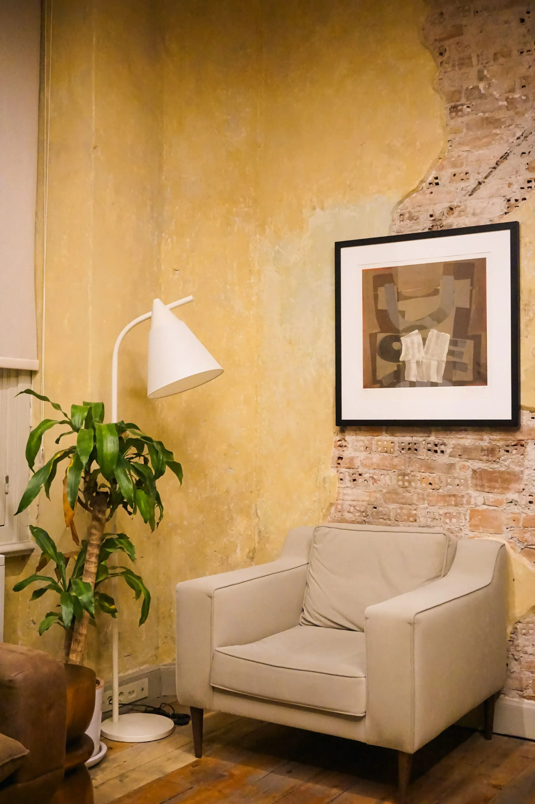

Imagem ilustrativa · não retrata o local ou a equipe01 / Clínica Revolução do Afeto · Bady Bassitt
Acolhimento em cada fase da vida.
Lucimara C. Dangelo. Um espaço de escuta para cada fase da vida. Psicologia clínica com Terapia Cognitivo-Comportamental e cuidado atento às necessidades de cada pessoa.
- CRP 06/178096
- Pós em Psicologia Clínica e TCC
- Atendimento infantil acima de 8 anos
 Imagem ilustrativa · não retrata o local ou a equipe
Imagem ilustrativa · não retrata o local ou a equipe02 / Formas de acolher
A escuta encontra diferentes caminhos.
Psicoterapia individual
TCC para crianças acima de 8 anos, adolescentes, adultos e idosos.
Home care para idosos
Atendimento psicológico domiciliar para idosos acamados ou com dificuldade de locomoção, conforme disponibilidade.
Atendimento familiar e de casal
Espaço de acompanhamento divulgado pela Clínica Revolução do Afeto.
Orientação vocacional e profissional
Acompanhamento para explorar escolhas e caminhos relacionados à vida profissional.
 Imagem ilustrativa · não retrata o local ou a equipe
Imagem ilustrativa · não retrata o local ou a equipe03 / Trajetória & cuidado
Revolução do Afeto. Respeito pela sua história.
Na Clínica Revolução do Afeto, Lucimara trabalha com a Terapia Cognitivo-Comportamental. Sua proposta reúne escuta, respeito e atenção às diferentes etapas da vida. O cuidado também pode chegar à casa de idosos para quem o deslocamento até o consultório é uma dificuldade.
- Atendimento a partir dos 8 anos, incluindo adolescentes, adultos e idosos
- Home care para idosos acamados ou com mobilidade reduzida
- Pós-graduação em Psicologia Clínica e Terapia Cognitivo-Comportamental
04 / Seu próximo passo
Vamos conversar?
Bady Bassitt/SP · CEP 15115-000Conversar pelo WhatsApp ↗
Ver mapa do endereço +
| Segunda a quinta | 17h às 21h |
|---|
Horário divulgado no perfil profissional. Confirme a disponibilidade pelo WhatsApp.
Psicóloga · CRP 06/178096 · Bady Bassitt/SP